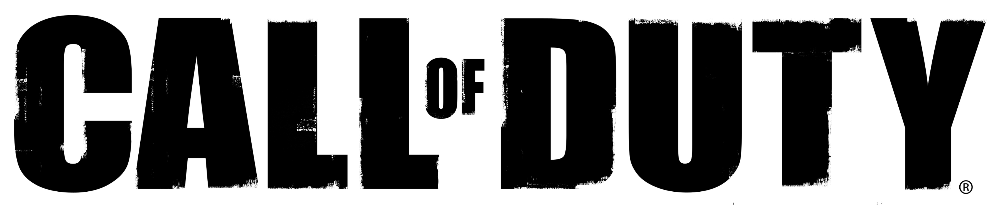

Technical Wiki
Introduction
PoC: MA
Agenda
Why we need a technical Wiki?
code and knowledge are our assets & value
→ persist & spread knowledge to increase it
- collaboratively building documentation
- creating and maintaining knowledge bases
- gathering tacit knowledge
- ...

It is your responsibility as a professional developer
to properly document code and software
that is intended for use by others.
Contribution & Permissions
-
public Wiki: 90-9-1 rule
(90: read, 9: read & edit, 1: read, edit & create) -
enterprise Wiki
contribution level is much higher based on the fact that people are contributing as part of the daily course of their work → ideally: 0-0-100!!!
Wiki platforms
-
specific Wiki systems
(Wikipedia, DokuWiki, MediaWiki, ..) -
collaboration management
(Confluence, SharePoint) -
Nowadays: Lightweight Git/Markdown-based Wikis
(github, BitBucket, Azure Devops, docs.microsoft.com, ..)
Why technicians like Git-based Wikis
- it's handy, it's fast, it's flexible
-
provides all Benefits from a DVCS
- Collaboration
- Online & Offline-Editing
- Branching
- Diffing
-
versioned in a context, because commit wraps
- all belonging changes (docs, pics, references)
- the commit message
-
Markup-Language
- frees you from presentation
- all pages have the same look & feel
-
Export-Options
- Pandoc allows exporting to numberless formats
- use cace: external documents, like manuals, guidelines, ...
-
Flexibility regarding hoster
-
No vendor lock-in
(in seconds we can move to another hoster)
-
No vendor lock-in
-
It's fun, it's modern
(at least for the most)
Why we use Markdown
-
it's really fast to write and manage
- limited and easy to remember formatting tags
- perfect suited for versioning because of text
-
Markdown can be a useful tool for producing clean & professional looking
- research papers, memos
- blog posts
- books
- without the hassle of remembering lots of HTML tags
http://www.makeuseof.com/tag/learning-markdown-write-web-faster/
→ btw: this presentation as well (Markdown and Git & FsReveal)
Headers
1: 2: 3: 4: 5: 6: |
|
H1
H2
H3
H4
H5
H6
Alternatively, for H1 and H2, an underline-ish style:
1: 2: 3: 4: 5: |
|
Alt-H1
Alt-H2
Emphasis
1: 2: |
|
Emphasis, aka italics, with asterisks or underscores.
Strong emphasis, aka bold, with asterisks or underscores.
Lists
1: 2: 3: 4: 5: 6: |
|
- First ordered list item
-
Another item
- Unordered sub-list.
-
Actual numbers don't matter, just that it's a number
- Ordered sub-list
- And another item.
btw: Markdown takes care, regarding numbering
→ use 1. only
References & Links
-
URL-Reference
[text for the link](http-address) -
Link to another page
[text for the link](<filename with ext>) -
Images

tip: skip the alternate text
Source Code
incl. Syntax-Highlighting
1: 2: 3: 4: |
|

Start Editing

Take care of the commit message

Commit Messages
use ... for trivial changes
History

Diffing

toggle between edit and preview


FAQ
-
EN vs. DE?
-
Code: EN, Wiki: EN or DE
The more technical the more English
-
- Can I break something? → No!!!
Perspective
-
Content, content, content
- Software Maintenance Manuals
- Build Manuals
- Architectural knowledge, diagrams
-
Workshops
- Git-Basics
- offline editing
- Exporting content
Links